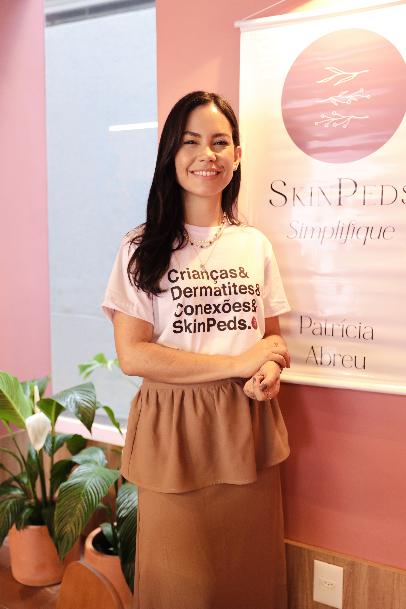
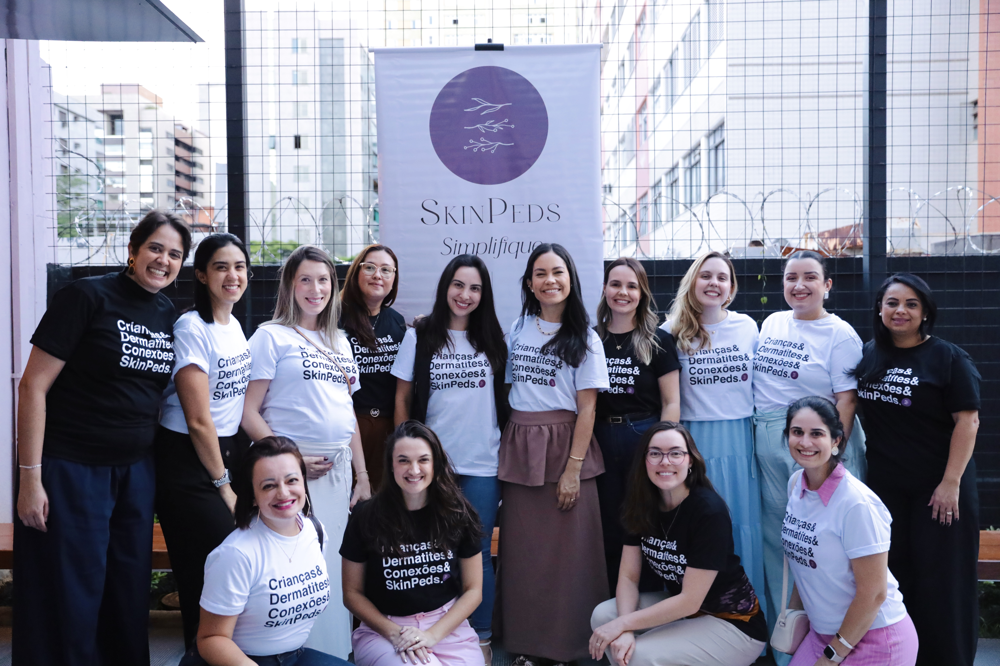

Dermatologista | RQE 10324 | Belo Horizonte
Simplificando as doenças de pele na infância. Dermatologista especialista em pele pediátrica, clÃnica e estética. Criadora do Skinpeds e mentora de +140 médicos.

A Dra. Patricia Abreu é dermatologista em Belo Horizonte (RQE 10324), referência em dermatologia pediátrica. Sua missão é simplificar as doenças de pele na infância, levando conhecimento tanto para médicos quanto para famÃlias. Criadora do Skinpeds, já formou mais de 140 médicos em todo o Brasil.
Especialista em doenças de pele na infância, com abordagem acolhedora para bebês e crianças.
Diagnóstico e tratamento de doenças de pele, cabelos e unhas para todas as idades.
Procedimentos para rejuvenescimento e cuidados com a beleza da pele.
+140 médicos formados pelo Skinpeds. Cursos e mentoria em dermatologia pediátrica.
Cuidado especializado para pacientes e capacitação para profissionais
Consulta especializada para bebês e crianças. Dermatites, alergias de pele, manchas e infecções cutâneas na infância com abordagem acolhedora.
AgendarAvaliação completa da saúde da sua pele, cabelos e unhas. Diagnóstico preciso e tratamento individualizado para todas as idades.
AgendarProcedimentos para rejuvenescimento, harmonização e cuidados com a beleza da pele com segurança e naturalidade.
AgendarCapacitação em dermatologia pediátrica para médicos que desejam se aprofundar no cuidado da pele infantil. +140 médicos formados.
Saiba maisO Skinpeds nasceu da missão de simplificar as doenças de pele na infância. Criado pela Dra. Patricia Abreu, o curso já formou mais de 140 médicos em todo o Brasil, tornando-se referência em capacitação em dermatologia pediátrica.
Mentoria e capacitação em dermatologia pediátrica com conteúdo baseado em evidências e casos clÃnicos reais.
Orientações práticas e seguras para cuidar da pele dos seus filhos com confiança no dia a dia.

"Atendimento excepcional! A Dra. Patricia é muito atenciosa e competente. Minha pele nunca esteve tão bem."
"Profissional incrÃvel! Resolveu um problema de pele que eu tinha há anos. Recomendo demais!"
"O curso Skinpeds é sensacional! Aprendi muito sobre os cuidados com a pele do meu filho. Conteúdo claro e acessÃvel."
Acompanhe dicas de cuidados com a pele e novidades
(27) 99780-1508
Belo Horizonte - MG
Seg a Sex: 8h às 18h
Substitua por um iframe do Google Maps